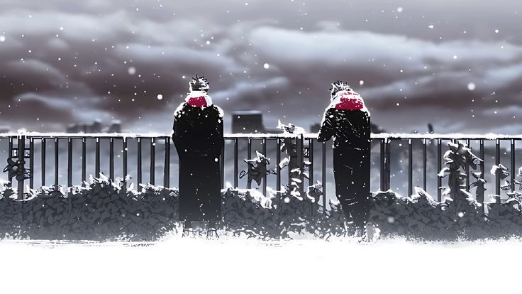
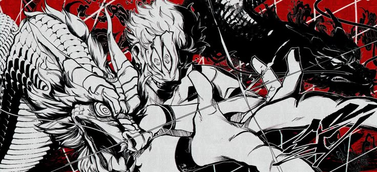

Visual Fixes in Many Games by Improving Z-cull and Texel Remapper In this showcase we highlight the latest visual improvements coming to RPCS3 through enhanced Z-Cull emulation and Texel Remapper fixes. From eliminating graphical artifacts to correcting rendering errors across a wide range of titles, we take a look at the noticeable difference these changes make in PlayStation 3 emulation.
A new Jujutsu Kaisen game is in development on Roblox, and it’s already generating a lot of buzz among fans of the popular anime and manga series. The game, promises to bring the world of Jujutsu Kaisen to life in a new and exciting way.

After three months of development, the Jujutsu Kaisen Modulo has finally come to an end. The mod.Aimed to bring the world of Jujutsu Kaisen to life in a new and exciting way. The mod featured new characters, abilities, and storylines that were inspired by the anime and manga series. Fans of Jujutsu Kaisen have praised the mod for its attention to detail and its ability to capture the essence of the original series.

Ryomen Sukuna, the powerful curse user from the Jujutsu Kaisen series, is expected to make a comeback in the upcoming sequel, JJK-2. Fans have been eagerly anticipating his return, and the announcement has generated significant excitement within the community.